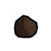

窄用级·中世纪·金锭 GoldBar
窄用途家具建筑90穿戴件5共95件 价值35 质量0.35 护甲0.50/0.60/0.06 利钝0.40/0.50
Core_SK · def自带 · Things/Item/Ingot

窄用级·中世纪·银锭 SilverBar
窄用途家具建筑90穿戴件5共95件 价值5 质量0.30 护甲0.60/0.70/0.06 利钝0.60/0.60
Core_SK · def自带 · Things/Item/Ingot

原料级·中世纪·沼泽铁（铁，锰） BogIron
不可塑形仅配方原料 价值2 质量0.25 护甲—/—/— 利钝—/—
Vile's Materials Science · 产出研究档 · Things/Item/Ores/Iron
原料级·中世纪·焦炭 Coke
不可塑形仅配方原料 价值3 质量0.20 护甲—/—/— 利钝—/—
Vile's Metallurgy · def自带 · Things/Item/Resource/CoalOre